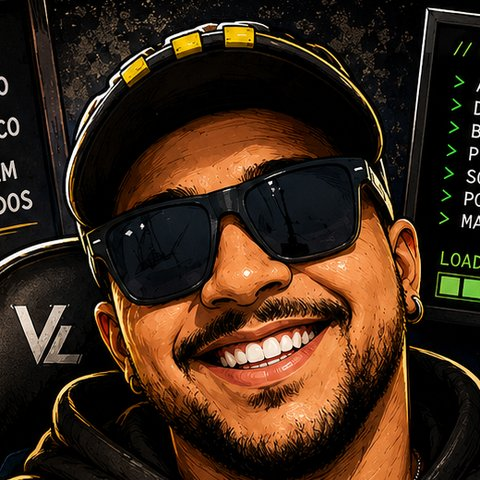

Vitor Barbosa
Mais de 10 anos atuando com qualidade como Quality Gate e Analista de QA: validação de requisitos, regras de negócio, casos de teste e documentação de bugs. Hoje atuo com testes funcionais e automação de testes Web, Mobile e API com Java, Selenium, Appium e RestAssured.

Qualidade como base de tudo
São mais de 10 anos como ponto de qualidade: no Ministério do Esporte, como Analista de Qualidade e Conformidade (Quality Gate), e no CBCP, como Quality Gate / Analista de QA. Validei requisitos e regras de negócio, criei checklists e matrizes de rastreabilidade, identifiquei cenários de exceção e documentei não conformidades com evidências.
Atuo com Qualidade de Software: testes funcionais, regressivos, exploratórios e E2E, casos de teste, testes de API com Postman e bug reports com evidências. Na automação, trabalho com Java, Selenium, Appium e RestAssured, aplicando Page Object Model, esperas explícitas e integração contínua.
Uso IA como apoio para gerar cenários e massa de dados, sempre revisando o resultado. Gosto de entender o negócio por trás de cada funcionalidade, porque é ali que estão os bugs que importam.
- Testes funcionais e automação Web, Mobile e API
- Validação de requisitos e regras de negócio
- Casos de teste, rastreabilidade e bug reports
- Page Object Model e testes independentes
- Testes de contrato e cenários negativos em APIs
- Trabalho junto a dev e PO em times ágeis
Experiência
Analista de QA · Automação de Testes
Automação de testes Web, Mobile e API com Java, Selenium, Appium, RestAssured e JUnit 5: Page Object Model, testes de contrato, cenários negativos e pipeline no GitHub Actions.
Analista de Projetos · Quality Gate / Analista de QA
Validação de critérios de elegibilidade e regras de negócio com matriz de rastreabilidade e critérios de aceite. Identificação de cenários de exceção (edge cases), documentação de não conformidades e pareceres técnicos, contribuindo para a redução de retrabalho.
Analista de Projetos · Analista de Qualidade e Conformidade
Ponto de qualidade (Quality Gate) em todo o ciclo de vida de projetos. Validação de requisitos e regras de negócio, checklists de verificação e roteiros de auditoria, registro de não conformidades em pareceres técnicos com evidências e rastreabilidade, e análise de indicadores para mitigação de riscos.
Formação
Análise e Desenvolvimento de Sistemas Cursando
Pós-graduação em Engenharia de Software Cursando
Pós-graduações em Ciência de Dados & Big Data Analytics e Data Mining Cursando
Bacharelado em Gestão Pública
Stack de QA
Teste de Software
Automação Web & Mobile
Testes de API
Ferramentas & Processos
Trabalhos em destaque
QA Automation Java
Automação de testesAutomação em três camadas: testes de API com RestAssured (CRUD, contrato com JSON Schema e cenários negativos), testes Web com Selenium, Page Object Model e esperas explícitas, e estrutura mobile com Appium para Android e iOS. Testes parametrizados, tags do JUnit 5 e pipeline no GitHub Actions.
Ver no GitHub ↗AI Audit System · Gastos Públicos
Validação de regrasSistema de auditoria de compliance que aplica conceitos de Quality Gate: validação de regras de negócio sobre gastos públicos, classificação de transações suspeitas e relatórios automatizados.
Ver no GitHub ↗Vamos conversar?
Aberto a oportunidades em QA e automação de testes. Respondo em até 24h.